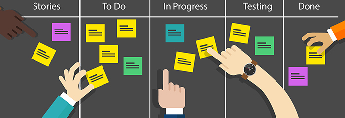

How to Implement Agile Methodology in Your Software Development Process
By: Nora
Introduction to Agile Development
Are you looking to streamline your software development process to increase efficiency and collaboration among your team? Look no further than agile methodology. Agile development is a proven approach to software development that emphasizes flexibility, continuous improvement, and customer satisfaction. In this article, we’ll introduce you to the key principles behind agile methodology and provide you with everything you need to know to get started.
Agile methodology was developed in response to the challenges faced by traditional software development processes, such as the waterfall model. The waterfall model is a sequential process in which each stage of the development cycle is completed before moving onto the next. However, this approach can lead to delays, rigidness, and a lack of customer involvement.
Agile methodology, on the other hand, is based on a set of principles that prioritize collaboration, flexibility, and customer satisfaction. The approach is iterative, meaning that software is developed in small increments or modules, allowing each team member to provide feedback and make changes as needed.
One key component of agile methodology is the role of the product owner, who acts as the interface between the development team and the customer. The product owner is responsible for defining what needs to be built and ensuring that the end product meets the customer’s needs and expectations.
Another important aspect of agile development is the use of sprints, which are short, focused periods of development. Sprints help to keep the team on track and ensure that progress is being made towards the end goal.
In conclusion, if you’re looking to streamline your software development process and increase collaboration and customer satisfaction, agile methodology is the way to go. The principles of agile development emphasize flexibility, continuous improvement, and customer involvement, and can help your team to work more efficiently and effectively. Stay tuned for our next article where we dive deeper into the implementation of agile methodology in your software development process.
ad space
Adopting Agile Methodology in Software Development
Software development is becoming increasingly complex and dynamic, and the traditional methods of development just don't cut it anymore. This is where agile methodology comes into play, which is a set of values and principles that help teams work collaboratively to deliver high-quality software products in a faster and more efficient manner. Implementing agile methodology in your software development process can be challenging, but the benefits are worth it. In this article, we will explore the strategies and best practices that you can follow to adopt agile methodology in your software development process.
Adopting agile methodology requires a shift in your mindset and your team's culture. The first step is to educate yourself and your team about agile methodology and what it entails. Then, you need to identify the key stakeholders and involve them in the planning and execution phases. The next step is to establish a clear set of priorities and goals, and then break them down into small, manageable tasks that can be accomplished within short time frames (sprints). This will help you deliver value to your customers faster and more frequently.
Another important aspect of adopting agile methodology is to build a collaborative and self-organizing team. This means creating an environment where team members can communicate openly and frequently, share their ideas and thoughts on the project, and work together towards a common goal. You should also encourage feedback and continuous improvement, so that your team can learn from their mistakes and make changes accordingly.
In conclusion, adopting agile methodology in your software development process is a significant change that requires careful planning and execution. By following the best practices we've outlined in this article, you can ensure a smooth transition and reap the benefits of agile methodology.
ad space
Creating an Agile Development Plan
Many software development teams are adopting agile methodology to improve their efficiency, productivity, and flexibility. Agile allows teams to work collaboratively, adapt to changes quickly, and deliver high-quality software faster than traditional development methods. To implement agile methodology successfully, you need to have a solid Agile Development Plan that defines your team's goals, processes, and roles.
Creating an Agile Development Plan is essential to ensure that everyone on your team is aligned and has a clear understanding of what is expected of them. The plan should outline the development phases, including the planning, designing, coding, testing, and deployment stages. It should also include a breakdown of tasks, timelines, and deliverables for each stage to help you stay on track and meet your project goals.
To create a robust Agile Development Plan, you need to follow a few critical steps. First, define your vision and objectives to ensure that you are building the right software for your customers. Identify the features that add the most value and prioritize them accordingly. Then, you need to create a backlog of user stories that describe how your software will address your customers' needs.
Next, you need to assemble your development team and assign roles and responsibilities. You should also establish the communication channels and tools you will use to collaborate effectively, such as daily stand-up meetings, sprint reviews, and a project management tool like Jira.
Finally, you need to schedule the sprints and determine the sprint length based on your team's capacity and the complexity of the project. During each sprint, you will work on a specific set of user stories, deliver a working software increment, and collect feedback from your stakeholders to improve your product.
In conclusion, creating an Agile Development Plan is crucial to implementing agile methodology successfully. With a clear plan, you can streamline your development process, reduce waste, and deliver software that meets your customers' needs.
ad space
Key Benefits to Implementing Agile Development
Agile methodology has become the go-to approach for many software development teams. This flexible and iterative approach allows teams to rapidly respond to changes, adjust project plans, and deliver high-quality software quickly. While many people are familiar with the basic tenets of Agile, it’s important to understand the key benefits of implementing Agile development to fully appreciate its value to your organization.
One of the key benefits of Agile is that it promotes collaboration and communication among team members. Unlike traditional development methods, Agile encourages active participation and transparency among team members, which leads to better problem-solving, increased predictability, and faster response times.
Another benefit of Agile development is the focus on delivering working software in a quick and incremental manner. This approach enables teams to identify and address issues early on in the development process, which reduces risk and ensures that the final product meets customer needs.
Agile also allows for greater flexibility in project planning and prioritization. By using Agile techniques such as user stories and prioritization, teams can quickly adjust their plans in response to changes in business requirements or technology.
Finally, Agile promotes continuous improvement by fostering experimentation and learning. Through retrospectives and other Agile ceremonies, teams can evaluate their processes, identify areas for improvement, and make changes to improve their performance and outcomes.
In conclusion, the benefits of implementing Agile development in your software development process are numerous and well-documented. By promoting collaboration, delivering working software quickly, enabling flexibility in planning, and fostering continuous improvement, Agile can help your team deliver high-quality software that meets the needs of your customers while remaining competitive in a rapidly changing market.
ad space
Conclusion
After weeks of research and analysis, it's time to draw some conclusions on how to implement agile methodology in your software development process.
First and foremost, it's important to understand that Agile is not a one-size-fits-all solution. Each organization has unique needs, requirements, and existing processes, so implementing Agile will look different for each team.
That being said, there are some general recommended steps to guide your Agile implementation journey. Start by educating yourself and your team on what Agile is, and its core principles. Next, assess your current processes, and identify areas that could benefit from Agile practices. It's also crucial to get buy-in from all stakeholders, from top leadership to individual team members.
Once you've established a foundation, prioritize your software development backlog, and set achievable goals for each sprint. Make sure to involve your team in the planning process, and give them ownership over the work they'll be doing. Communication and collaboration are key to a successful Agile process.
Finally, continuously monitor and evaluate your progress. Use data and analytics to measure your team's performance, and make adjustments as needed. Remember, Agile is all about flexibility and adaptability.
In conclusion, implementing Agile methodology in your software development process can greatly improve efficiency, productivity, and overall quality. While it may take some initial investment and adjustment, the benefits of a truly Agile team are well worth it. Keep an open mind, stay committed, and be willing to continuously learn and improve.
ad space